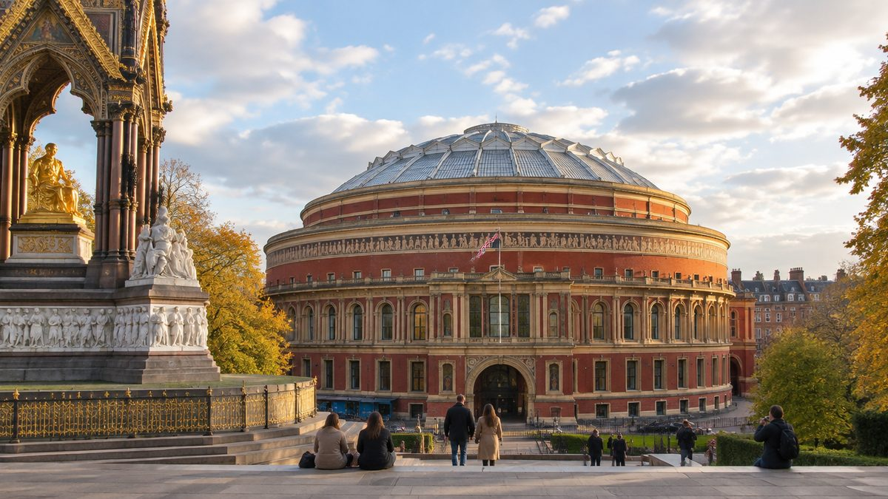
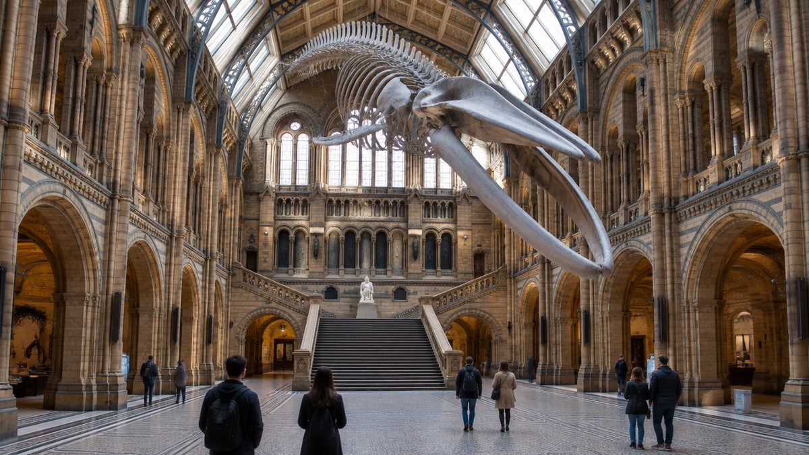
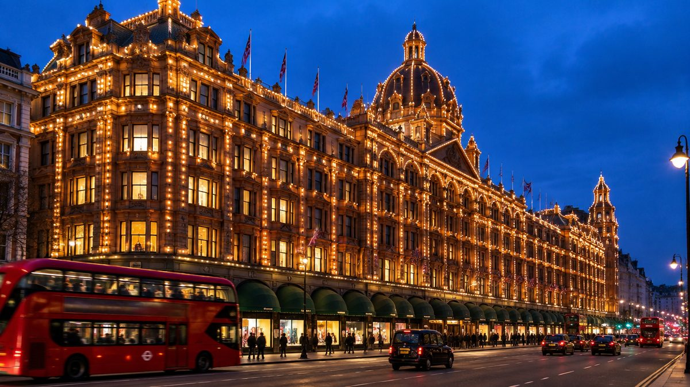
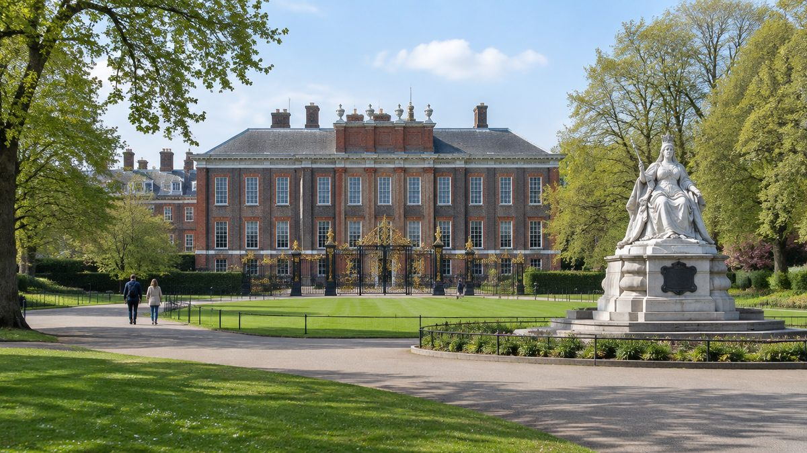

עודכן לאחרונה בספטמבר 2026
אם יש יום אחד בלונדון שכמעט בלתי אפשרי לפספס בו, זה היום בקנזינגטון. שלושת המוזיאונים הגדולים של בריטניה יושבים באותו רחוב, הכניסה לכולם חינמית, מנהרה מקורה מובילה אליהם ישירות מהרכבת התחתית, ובמרחק עשר דקות הליכה מחכים הרודס מצד אחד וארמון קנזינגטון עם הגנים מצד שני. לא צריך מזל עם מזג האוויר, לא צריך כרטיסים שנגמרים, ולא צריך לרוץ. צריך רק לבחור מה מתוך זה עושים היום.
בחרו כיוון ותראו כאן את המקומות עצמם, עם מה שכדאי לדעת לפני שהולכים.
מה זה קנזינגטון, ולמה זה האזור שבנוי הכי טוב למטיילים

קנזינגטון היא רובע במערב לונדון, ממש מעבר לקצה של הייד פארק, והיא מורכבת בפועל משלוש שכונות שנוגעות זו בזו. סאות׳ קנזינגטון בדרום, עם רחוב המוזיאונים. נייטסברידג׳ במזרח, עם הרודס ורחובות הקניות. וקנזינגטון עצמה במערב, עם הארמון, הפארק ורחוב הייסטריט. המרחק מקצה לקצה הוא פחות משלושה קילומטרים, וברוב הדרך הולכים בתוך פארק.
הסיבה שכל הדברים האלה יושבים יחד היא סיפור אחד. ב-1851 אירחה לונדון את התערוכה העולמית הגדולה בהייד פארק, ארמון בדולח ענק שמשך שישה מיליון מבקרים. הרווח היה עצום, והנסיך אלברט, בעלה של המלכה ויקטוריה, החליט להשקיע אותו בקניית השטח שמדרום לפארק ולבנות עליו רובע שלם של מוזיאונים, מכללות ואולמות. הלונדונים כינו את הרובע החדש בלגלוג אלברטופוליס, אבל הוא נבנה: מוזיאון ויקטוריה ואלברט, מוזיאון הטבע, מוזיאון המדע, רויאל אלברט הול והאימפריאל קולג׳ כולם עומדים על האדמה שנקנתה מהרווח של התערוכה ההיא.
מה שזה אומר לכם בפועל: זה לא אזור שבו צריך לחבר נקודות רחוקות. זה אזור שתוכנן מלכתחילה כמקום אחד, ומאז 2001, כשבריטניה ביטלה את דמי הכניסה למוזיאונים הלאומיים, הוא גם כמעט בחינם. הדבר היחיד שצריך להחליט הוא מה מוותרים עליו, כי אי אפשר לעשות את הכל ביום אחד.
למי האזור הזה מתאים, ולמי פחות
שלדי דינוזאורים, מוזיאון שכולו כפתורים ללחוץ, מגרש משחקים עם ספינת פיראטים, פארק עם טווסים. הכל בהליכה, וכמעט הכל בחינם.
מוזיאון הטבע והרודס הם מהדברים שכולם מכירים מתמונות, וארמון קנזינגטון הוא הארמון שבאמת מסתובבים בו בנחת.
האזור הטוב ביותר בעיר ליום רטוב. מנהרה מקורה מהתחנה למוזיאונים, ואחריהם הרודס ומוזיאון העיצוב, הכל מתחת לגג.
אפשר למלא כאן יום שלם בלי לשלם על כניסה אחת. בתשלום רק הארמון ותערוכות מיוחדות, ושניהם בחירה ולא חובה.
ולמי זה פחות מתאים. מי שמחפש שווקים, אמנות רחוב ואווירה של שכונה חיה יתאכזב, כי קנזינגטון מסודרת, שקטה ויקרה, ובערב הרחובות מתרוקנים. הפתרון הוא לשלב אותה עם קמדן או שורדיץ׳ ביום אחר. ומי שרוצה לראות את שלושת המוזיאונים ברצינות צריך לדעת שזה לא יום אחד אלא שלושה, ושהניסיון לדחוס את כולם ליום מסתיים בדרך כלל בילדים עייפים ובמבוגרים שלא זוכרים מה ראו.
🏛️ רובע המוזיאונים, שלושה ענקים באותו רחוב

רחוב אקזיביישן רואד וקרומוול רואד שמצטלב איתו הם המקום שבו יושבים זה ליד זה שלושה מהמוזיאונים הגדולים בעולם. לכולם נכנסים בחינם, לכולם יש תערוכות מיוחדות בתשלום שאפשר לדלג עליהן, וכולם נמצאים במרחק שתיים עד חמש דקות הליכה זה מזה. הכלל היחיד: לא לנסות את שלושתם ביום אחד. בוחרים אחד לבוקר ולכל היותר עוד אחד אחר הצהריים.
| מקום | עלות | למה כדאי |
|---|---|---|
| מוזיאון הטבע | חינם | דינוזאורים, לווייתן ואולם ויקטוריאני, המנצח עם ילדים |
| מוזיאון המדע | חינם | חלליות, מנועים ותצוגות להפעלה, נדרש כרטיס חינמי מראש |
| מוזיאון ויקטוריה ואלברט | חינם | אופנה, תכשיטים ועיצוב, והחצר הכי נעימה בעיר לקפה |
| תערוכות מיוחדות בכל אחד מהם | בתשלום | 15 עד 30 ליש״ט, שוות רק אם הנושא באמת מעניין אתכם |
| Wonderlab במוזיאון המדע | בתשלום | גלריית ניסויים לילדים, זולה יותר בהזמנה מראש |
מוזיאון הטבע
הבניין הזה הוא הסיבה שאנשים מגיעים לקנזינגטון גם בלי ילדים. קתדרלה מטרקוטה מ-1881, עם קופים מפוסלים על העמודים ושלד לווייתן כחול באורך עשרים וחמישה מטרים שתלוי מהתקרה של אולם הכניסה. מעבר לאולם מחכים הדינוזאורים, סימולטור רעידת אדמה, ואגף שלם על כדור הארץ. פתוח כל יום מעשר עד עשר לשש, כניסה אחרונה בחמש וחצי. הכניסה חינמית, ומי שמזמין כרטיס חינמי מראש באתר עוקף את התור, שבסופי שבוע ובחופשות בית הספר יכול להגיע לחצי שעה ויותר. תערוכות מיוחדות בתשלום, נכון לספטמבר 2026 בין 15 ל-25 ליש״ט למבוגר. שימו לב שהמוזיאון סגור ביום שישי, 9 באוקטובר 2026, בגלל אירוע התרמה.
מוזיאון המדע
שכן קרוב של מוזיאון הטבע, ממש מעבר לפינה באקזיביישן רואד, וההפך הגמור ממנו באופי: כאן לא מסתכלים אלא מפעילים. חלליות אמיתיות, מנועי קיטור, אגף על טיסה, וגלריית משחק לילדים קטנים בקומת המרתף שכלולה בכניסה החינמית. הגלריה בתשלום היא Wonderlab, אולם ניסויים לילדים בגילי בית ספר, נכון לספטמבר 2026 החל מ-13.50 ליש״ט בהזמנה מראש ועד 17 ליש״ט ביום עצמו. פתוח כל יום מעשר עד שש, כניסה אחרונה ברבע לשש. הכניסה חינמית, אבל המוזיאון מבקש להזמין כרטיס חינמי מראש באתר, ולכן זה הכרטיס היחיד באזור שבאמת כדאי לסדר לפני שיוצאים מהמלון. סגור ביום רביעי, 11 בנובמבר 2026.
מוזיאון ויקטוריה ואלברט
המוזיאון הגדול בעולם לעיצוב ולאמנות שימושית, וזה נשמע יבש הרבה יותר ממה שזה. אופנה מהמאה השמונה עשרה ועד השבוע שעבר, תכשיטים, פסלים, שטיחים, ואולם יציקות עם עותק בגודל טבעי של עמוד טראיאנוס מרומא שנחתך לשניים כדי להיכנס לחדר. הדבר שכדאי לא לפספס הוא החצר הפנימית, עם בריכה רדודה שילדים מטיילים בה בקיץ, ובית הקפה של המוזיאון, שנפתח ב-1868 והיה בית הקפה הראשון בעולם בתוך מוזיאון. פתוח כל יום מעשר עד רבע לשש, ובימי שישי עד עשר בלילה, כשחלק מהגלריות נסגרות מוקדם יותר. כניסה חינמית, בלי שום הזמנה. תערוכות מיוחדות בתשלום, בדרך כלל בין 17 ל-30 ליש״ט.
🛍️ הרודס ונייטסברידג׳, החנות שנכנסים אליה גם בלי לקנות

הרודס נפתחה ב-1849 כמכולת קטנה עם שני עובדים, והיום היא חנות כולבו של שבע קומות ויותר משלוש מאות מחלקות, בבניין טרקוטה מ-1905 שמואר בלילה באלפי נורות. רוב המבקרים לא קונים בה כלום, וזה בסדר גמור. נכנסים בשביל אולמות המזון עם התקרות המצוירות והדוכנים, בשביל חדר המדרגות הנעות בסגנון מצרי, ובשביל מחלקת הצעצועים בקומה העליונה שהיא אטרקציה בפני עצמה. הכניסה חינמית, ואפשר לצאת עם קופסת תה או שקית ממתקים במחיר של מזכרת.
שעות הפתיחה הן היתרון הגדול של הרודס בתכנון היום: בימי שני עד שבת מעשר בבוקר עד תשע בערב, וביום ראשון מאחת עשרה וחצי עד שש, כשבחצי השעה הראשונה מותר רק להסתובב ולא לקנות, בגלל חוק המסחר הבריטי ביום ראשון. כלומר, כשהמוזיאונים והארמון כבר נסגרו, הרודס עדיין פתוחה, ולכן היא הסיום הטבעי של היום ולא ההתחלה. תיקי גב גדולים ומזוודות לא נכנסים, ויש קוד לבוש רופף, בלי בגדי ים ובלי בגדים מלוכלכים.
סביב הרודס משתרעת נייטסברידג׳, רובע הקניות היקר של לונדון. רחוב סלואן סטריט עם חנויות המעצבים, חנות הכולבו הרווי ניקולס בפינה, ובתי הקפה שמסביב. זה מקום להסתובב בו חצי שעה ולהסתכל בחלונות הראווה, לא מקום לקנות בו, אלא אם התקציב באמת מאפשר. הצד השני של הרחוב הוא כבר הייד פארק, וזו הדרך הנעימה ביותר להגיע מכאן לארמון.
👑 ארמון קנזינגטון והגנים, הארמון שגרים בו

ארמון קנזינגטון הוא ההפך מארמון בקינגהאם. במקום שערים, משמר ושורת תיירים על הגדר, זה בית מלבנים אדומות בקצה פארק, שנראה כמו אחוזה כפרית שנשארה במקום כשהעיר גדלה סביבה. המלכה ויקטוריה נולדה כאן ב-1819 וגרה בו עד שהוכתרה, הנסיכה דיאנה גרה כאן אחרי הגירושים, והיום זה המעון הלונדוני הרשמי של הנסיך וויליאם וקייט. חלק מהארמון פתוח לביקור, והשאר בית פרטי.
הביקור בפנים עובר בחדרי המדינה של המלך, בחדרים של ויקטוריה הצעירה, ובתערוכות מתחלפות על בני המשפחה. חשוב לדעת שחדרי המדינה של המלכה, אחד משלושת האגפים הפתוחים, סגורים לשיפוץ עד אביב 2027, ולכן הביקור קצר יותר מבדרך כלל, בערך שעה וחצי. הארמון פתוח בימי רביעי עד ראשון בלבד, מעשר עד שש בקיץ ומעשר עד ארבע בחורף, וסגור בימי שני ושלישי. נכון לספטמבר 2026 כרטיס מבוגר מתחיל ב-24.70 ליש״ט, ילד בגילים חמש עד חמש עשרה ב-12.40, ומתחת לגיל חמש בחינם. הכניסה היא לחלון זמן של חצי שעה, ולכן מזמינים מראש. לחיצה על שם הארמון בטקסט מציגה את המחיר המעודכן ביותר שיש לנו.
ומה שרוב האנשים לא יודעים: את הדבר היפה ביותר בארמון רואים בחינם. הגן השקוע, עם הבריכה, ערוגות הפרחים ופסל דיאנה שהוצב ב-2021, נמצא בתוך הגנים הציבוריים, ומקיף אותו שביל מקורה בצמחייה שממנו רואים הכל. הבריכה העגולה שמול הארמון עם הברבורים, פסל פיטר פן שהוצב בסתר בלילה אחד ב-1912, הגנים האיטלקיים עם המזרקות, ואנדרטת אלברט המוזהבת בקצה הדרומי, הכל בגני קנזינגטון, שפתוחים כל יום משש בבוקר עד הערב בלי כרטיס.
רויאל אלברט הול ואנדרטת אלברט
בקצה הדרומי של הגנים, ממש מול הכניסה למוזיאונים, עומדים זה מול זה שני מבנים שנבנו לזכר אותו אדם. רויאל אלברט הול הוא אולם הקונצרטים העגול מ-1871, עם כיפת הזכוכית והאפריז המצויר סביבו, שבו מתקיים כל קיץ פסטיבל הפרומס. אנדרטת אלברט מולו היא חופה גותית מוזהבת בגובה חמישים ושניים מטרים, מהמונומנטים המרשימים בעיר, ומדרגותיה הן המקום לשבת רגע ולצלם. באולם עצמו אפשר לעשות סיור מודרך של כשעה שעובר באולם הראשי ובתא המלכותי, נכון לספטמבר 2026 בסביבות עשרים ליש״ט למבוגר, והמחיר המעודכן מופיע בלחיצה על שם האולם. הסיור נחמד, אבל לא חובה. המראה מבחוץ הוא הדבר החשוב, והוא חינם.
👨👩👧 קנזינגטון עם ילדים
אם צריך לבחור יום אחד בלונדון שבו הילדים לא ישאלו מתי חוזרים למלון, זה היום הזה. הכלל היחיד הוא לא להגזים: מוזיאון אחד בבוקר, פארק אחר הצהריים, ולא יותר.
- מוזיאון הטבע. הלווייתן באולם הכניסה, גלריית הדינוזאורים עם הטירנוזאורוס שזז ושואג, וסימולטור רעידת האדמה באגף כדור הארץ. זו העצירה הראשונה עם ילדים מגיל שלוש, ובכל מזג אוויר. מזמינים כרטיס חינמי מראש כדי לא לעמוד בתור עם ילדים.
- מוזיאון המדע. לילדים עד גיל שבע יש גלריית משחק חינמית בקומת המרתף, עם מים, אור ובנייה. לגילי בית ספר יש את Wonderlab בתשלום, אולם שלם של ניסויים עם הדגמות חיות, וזה הכרטיס היחיד שכדאי לשקול לשלם עליו באזור. מזמינים את הכרטיס החינמי לכניסה מראש.
- מגרש המשחקים של דיאנה. בקצה הצפוני של גני קנזינגטון, ליד הארמון, מגרש משחקים ענק סביב ספינת פיראטים מעץ בגודל אמיתי, עם חול, טיפי אינדיאנים ומסלולי טיפוס. חינם, פתוח מעשר בבוקר, ומבוגרים נכנסים רק עם ילדים עד גיל שתים עשרה, מה שהופך אותו למקום הבטוח בעיר. בקיץ מגיעים מוקדם, כי בשיא יש הגבלת כניסה.
- הולנד פארק וגן קיוטו. עשר דקות מערבה מהארמון. גן יפני עם מפל ובריכת דגי קוי, טווסים שמסתובבים חופשי בשבילים, מגרש הרפתקאות לגילים חמש עד ארבע עשרה ופינת משחק נפרדת לקטנים. חינם, פתוח משבע וחצי בבוקר עד החשכה. עצירה מצוינת לסיום יום, או לבוקר שקט לפני המוזיאונים.
- הייד פארק והאגם. על אגם הסרפנטיין אפשר לשכור סירת פדלים בחודשים החמים, ומסביבו יש ברבורים, ברווזים ומקום לרוץ. בבקרי יום ראשון פינת הנואמים בקצה המזרחי פעילה, וזה שיעור באזרחות בריטית שילדים גדולים דווקא נהנים ממנו.
🌧️ אם יורד גשם
זה האזור הטוב ביותר בלונדון ליום רטוב, ולא בהפרש קטן. יורדים בתחנת South Kensington, נכנסים למנהרה המקורה שנבנתה ב-1885 ומובילה ישירות אל הכניסות של שלושת המוזיאונים, ובוחרים. אחרי מוזיאון אחד או שניים הולכים עשר דקות עד הרודס, שגם היא כולה מתחת לגג, ומסיימים שם. מי שרוצה עוד עצירה מקורה נוסע שתי תחנות לתחנת High Street Kensington ונכנס למוזיאון העיצוב, שהתצוגה הקבועה בו חינמית והבניין עם הגג המתעקל שלו הוא הסיבה לבוא. את הפארק, הגן השקוע והאנדרטה שומרים ליום אחר. המדריך ליום גשום בלונדון מכסה את שאר האפשרויות בעיר.
🚶 יום שלם, מוכן להליכה
המסלול הזה הולך ממערב למזרח, מהארמון להרודס, בגלל שעות הפתיחה: הארמון נסגר מוקדם, במיוחד בחורף, והרודס פתוחה עד תשע בערב. ככה כל דבר נעשה בזמן הנכון, וכל ההליכה היא בכיוון אחד, בעיקר בתוך הפארק. היום לוקח בערך שבע שעות בקצב נוח, ומסתיים בתחנת Knightsbridge, שנגישה במלואה.
הכניסה היחידה בתשלום היא הארמון, והיא החלטה של הרגע. מי שמוותר עליה מתחיל בגנים ובמגרש המשחקים ומגיע לאלברט הול באותה שעה. בימי שני ושלישי, כשהארמון סגור, זו ממילא הגרסה של היום. גני קנזינגטון עצמם אינם עצירה נפרדת במסלול אלא הדרך: ההליכה מהארמון לאלברט הול עוברת כולה בתוכם.
יום בנוי מראש שמתחיל בארמון ונגמר באולמות המזון של הרודס. לחיצה אחת מכניסה את כולו למסלול שלכם, ומשם אפשר לגרור, להחליף ולהוסיף ימים.
היום נוסף למסלול שלכם ואפשר להמשיך לגלוש. אם כבר בניתם מסלול קודם, הוא לא יימחק.
- 10:00ארמון קנזינגטון והגנים סביבובתשלום, פתוח רביעי עד ראשון. או רק הגן השקוע ופסל ויקטוריה, בחינם. אחר כך הבריכה העגולה, ועם ילדים מגרש המשחקים של דיאנה
- 12:45רויאל אלברט הול ואנדרטת אלברטרבע שעה הליכה דרומה דרך גני קנזינגטון. הצילום של היום, וצהריים על המדרגות או באקזיביישן רואד
- 13:45מוזיאון הטבעחינם. הלווייתן, הדינוזאורים ואגף כדור הארץ. עם ילדים, אפשר להחליף במוזיאון המדע
- 15:45מוזיאון ויקטוריה ואלברטחינם. שתי גלריות והחצר הפנימית לקפה. ביום שישי פתוח עד הלילה
- 17:15הרודסעשר דקות בברומפטון רואד. אולמות המזון, המדרגות המצריות והתאורה בחוץ
פירוט מלא של היום, שעה אחר שעה
| שעה | איפה | מה עושים |
|---|---|---|
| 10:00 | ארמון קנזינגטון והגנים | מגיעים לתחנת High Street Kensington והולכים שבע דקות דרך הפארק. מי שמשלם נכנס בחלון הזמן שהזמין. מי שלא, עובר בשביל המקורה סביב הגן השקוע ומצלם את פסל ויקטוריה. אחר כך הבריכה העגולה עם הברבורים, ועם ילדים מגרש המשחקים של דיאנה, ממש ליד הארמון. |
| 12:45 | רויאל אלברט הול ואנדרטת אלברט | הולכים דרומה דרך גני קנזינגטון, רבע שעה בשביל הרחב, ויוצאים בקצה הדרומי ישירות מול האנדרטה. יושבים על המדרגות, מצלמים את האולם, ואוכלים צהריים שהבאתם או בבתי הקפה של אקזיביישן רואד. |
| 13:45 | מוזיאון הטבע | חמש דקות הליכה במורד אקזיביישן רואד. חינם, עם כרטיס חינמי שהוזמן מראש. שעתיים: אולם הכניסה, הדינוזאורים ואגף כדור הארץ. עם ילדים אפשר להחליף במוזיאון המדע, ממש ליד. |
| 15:45 | מוזיאון ויקטוריה ואלברט | שלוש דקות הליכה. חינם, בלי הזמנה. שתי גלריות לבחירה, אופנה או תכשיטים, וקפה בחצר הפנימית. מי שעייף מדלג ישירות להרודס. |
| 17:15 | הרודס | עשר דקות הליכה בברומפטון רואד. אולמות המזון, חדר המדרגות המצרי, ובחוץ התאורה שכבר נדלקה. תחנת Knightsbridge צמודה לחנות, עם מעליות. |
חלופות ותוספות
- מוזיאון המדע במקום מוזיאון ויקטוריה ואלברט, למשפחות. ממש ליד מוזיאון הטבע, וכרטיס חינמי מראש.
- חצי יום בלבד: מוזיאון אחד ואז הרודס, שלוש שעות. או הארמון והגנים בבוקר ולהמשיך למרכז דרך הייד פארק.
- מוזיאון העיצוב והולנד פארק, כתוספת מערבית למי שיש לו יום שני באזור. מתחנת High Street Kensington הולכים עשר דקות מערבה למוזיאון, ומשם עוד חמש דקות לגן קיוטו ולטווסים. שקט, יפה ובחינם, ורוב התיירים לא מגיעים לשם.
- הייד פארק במקום הרודס, למי שלא מתעניין בקניות. יוצאים מהמוזיאונים צפונה, סירה על אגם הסרפנטיין בקיץ, ויוצאים בתחנת Hyde Park Corner.
- ערב שישי במוזיאון ויקטוריה ואלברט, שפתוח עד עשר בלילה, עם מוזיקה ובר. הדרך הכי לונדונית לסיים את היום בלי לשלם.
🚇 איך מגיעים, ואיזו תחנה לאיזה חלק
קנזינגטון נמצאת באזור תחבורה 1, כלומר בתוך תקרת התשלום היומית הרגילה ובמרחק עשר עד עשרים דקות ברכבת התחתית מכל מקום במרכז. יש ארבע תחנות שמשרתות את האזור, ולכל אחת יש תפקיד אחר ביום.
- South Kensington, למוזיאונים. קו פיקדילי הכחול, קו דיסטריקט הירוק וקו סירקל הצהוב. מהתחנה יוצאת מנהרה מקורה ישירות אל שלושת המוזיאונים, חמש דקות הליכה בלי לצאת לרחוב. זו גם התחנה שאליה מגיעים ישירות מהית׳רו בקו פיקדילי, בערך חמישים דקות בלי החלפה, ולכן האזור פופולרי כל כך ללינה. החיסרון היחיד: אין מעליות, ולא יהיו עד סוף העבודות ב-2031.
- Knightsbridge, להרודס ולנגישות. קו פיקדילי בלבד. היציאה מהתחנה היא ממש ליד הרודס, והתחנה נגישה במלואה מאז אפריל 2025, עם שלוש מעליות מהרחוב לרציף. מכאן עשר דקות הליכה למוזיאונים, ולכן זו התחנה למי שמגיע עם עגלה או כיסא גלגלים.
- High Street Kensington, לארמון ולמוזיאון העיצוב. קווי דיסטריקט וסירקל. שבע דקות הליכה לארמון דרך הפארק, ועשר דקות לכיוון השני למוזיאון העיצוב ולהולנד פארק. הרחוב עצמו הוא רחוב קניות רגיל ונעים, עם חנויות רשת ובתי קפה זולים יותר מנייטסברידג׳.
- Hyde Park Corner, לפארק. קו פיקדילי, בקצה המזרחי של הייד פארק. משם הולכים מערבה דרך כל הפארק, בערך חצי שעה עד אנדרטת אלברט, וזו הדרך היפה ביותר להגיע לאזור ממרכז העיר ביום בהיר.
באוטובוס, קו 9 וקו 52 נוסעים לאורך קנזינגטון רואד בין הארמון, אלברט הול ונייטסברידג׳, וקו 14 וקו 74 עוברים בברומפטון רואד ליד הרודס והמוזיאונים. הקו הסגול, אליזבת ליין, לא מגיע לקנזינגטון, ומי שמגיע איתו מהית׳רו עובר בתחנת Paddington לקו סירקל, שתי תחנות עד High Street Kensington או ארבע עד South Kensington. המדריך לקווי התחתית מסביר איזה קו עושה מה, ומדריך התחבורה מסביר את תקרות התשלום.
מה משלבים עם קנזינגטון באותו יום
- נוטינג היל ושוק פורטובלו, בשבת. תחנה אחת מ-High Street Kensington או הליכה של רבע שעה מהארמון. מדריך השווקים מסביר באיזה יום מגיעים.
- הייד פארק וארמון בקינגהאם, למי שסיים מוקדם. הולכים דרך הפארק מזרחה, יוצאים בהייד פארק קורנר, ועוד עשר דקות עד הארמון והמשמר.
- אוקספורד סטריט, בערב. שלוש תחנות מנייטסברידג׳ בקו פיקדילי עד Piccadilly Circus, או הליכה דרך הפארק עד Marble Arch.
🔗 איך קנזינגטון משתלבת בטיול שלכם
הכלל שלנו פשוט. קנזינגטון היא היום השני או השלישי, אחרי שכבר ראיתם את הביג בן ואת הארמון הגדול. זה היום שבו הרגליים כבר עייפות מהמרכז, ויום של מוזיאון, פארק וחנות אחת גדולה הוא בדיוק הקצב הנכון. עם ילדים, זה בכלל היום שבונים סביבו את הטיול.
- בטיול של שלושה ימים, קנזינגטון נכנסת רק כחצי יום של מוזיאון אחד, אם בכלל. מסלול שלושת הימים מסביר מה מוותרים עליו.
- בטיול של חמישה ימים, היא היום השלישי, מוזיאון בבוקר והייד פארק אחר הצהריים. מסלול חמשת הימים בנוי בדיוק ככה.
- בטיול של שבעה ימים, יש לה יום שלם עם זמן לארמון ולשני מוזיאונים, ומסלול שבעת הימים משלב אותה עם נוטינג היל.
- אם אתם לנים באזור, המוזיאונים הופכים למקום שנכנסים אליו לשעה בין לבין, וזה שווה יותר מכל כרטיס. מדריך הלינה בקנזינגטון מסביר למי זה מתאים ואיפה בדיוק.
שאלות שחוזרות על עצמן
כמה זמן צריך בקנזינגטון?
יום שלם אם רוצים גם ארמון, גם מוזיאון וגם הרודס. חצי יום מספיק לשני מוזיאונים מתוך השלושה, כי הם יושבים באותו רחוב. מי שמגיע עם ילדים צריך לחשב מוזיאון אחד בבוקר ופארק אחר הצהריים, ולא יותר.
האם צריך להזמין מראש למוזיאונים בקנזינגטון?
הכניסה לשלושת המוזיאונים חינמית, אבל הכללים שונים. מוזיאון המדע מבקש להזמין כרטיס חינמי מראש באתר שלו. מוזיאון הטבע ממליץ על כרטיס חינמי מראש כדי לעקוף את התור, אבל לא מחייב. מוזיאון ויקטוריה ואלברט לא דורש כלום. תערוכות מיוחדות בכל השלושה הן בתשלום נפרד.
כמה עולה יום בקנזינגטון?
אפשר לעבור יום שלם בלי לשלם על כניסה אחת: שלושת המוזיאונים, הרודס, הפארקים, הגנים סביב הארמון ומוזיאון העיצוב הם בחינם. בתשלום רק ארמון קנזינגטון, הסיור ברויאל אלברט הול, ותערוכות מיוחדות. נכון לספטמבר 2026 כרטיס מבוגר לארמון מתחיל ב-24.70 ליש״ט וילד בגילים חמש עד חמש עשרה ב-12.40.
האם קנזינגטון מתאימה ליום גשום?
זה האזור הטוב ביותר בלונדון ליום גשום. שלושה מוזיאונים ענקיים במרחק דקות זה מזה, מנהרה מקורה מתחנת הרכבת התחתית ישירות אליהם, הרודס במרחק עשר דקות הליכה, וכולם בחינם חוץ מהתערוכות המיוחדות.
התמונות במדריך הזה הן המחשות שהופקו עבור גו לונדון ולא צילומים תיעודיים של המקומות, ולכן פרטים קטנים בהן עשויים להיות שונים מהמציאות.